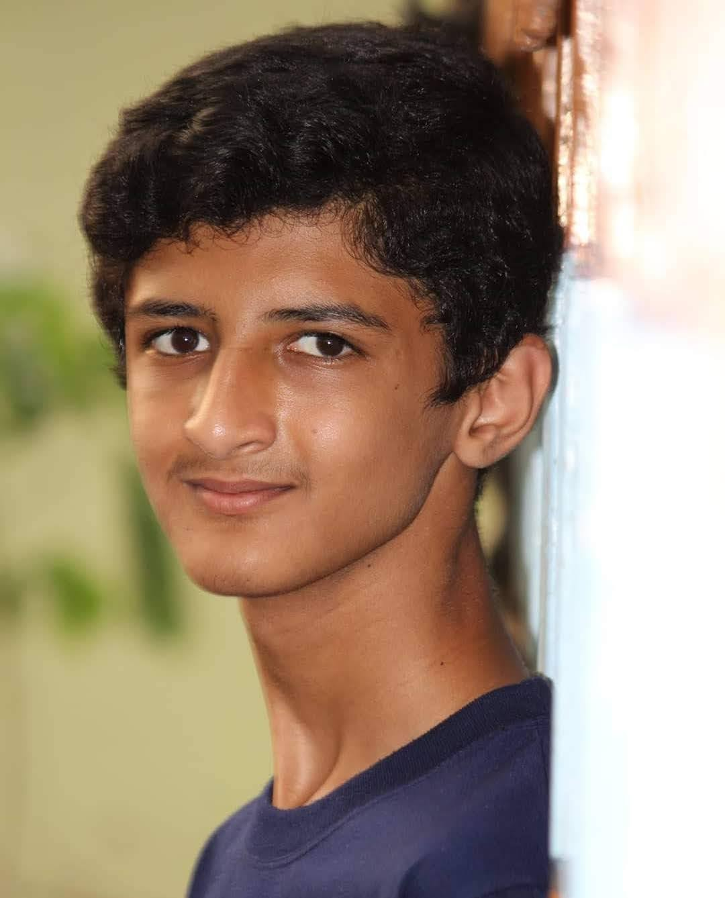

Sudhanva
My Contact
Index
- Tables
- Forms
Projects
- Layouts Using Tables
Lorem
ipsum
dolor sit
amet consectetur.
BIO
I am Sudhanva ,
Studying in 12th
i love to talk,code and dont know.
About Me !!!
I Study Computer Science
What I want to Learn
- Communucation Skill
- Programing Languages
- Html
- CSS
- JS
- Python3
- Video Editing
- Videography
- Video editing
Things I like To Eat
- Junk Food
- Bingo
- Tede Mede
- Oreo
- And Many More
Home Made Food
- Paratha
- Pulav
- Masala Dosa
- Puliyogare
- Tomato Bath
- Chapathi
- Upma